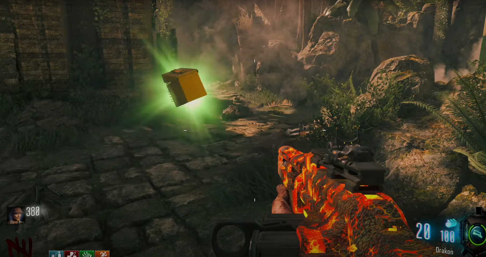
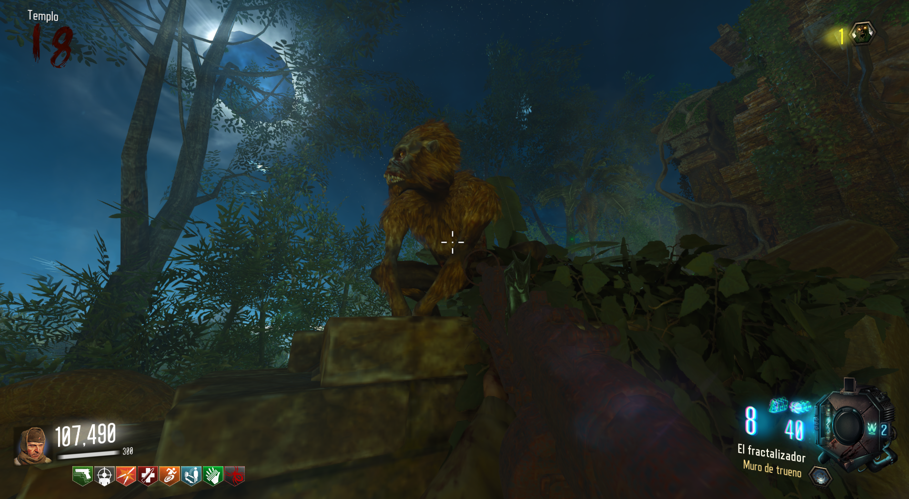
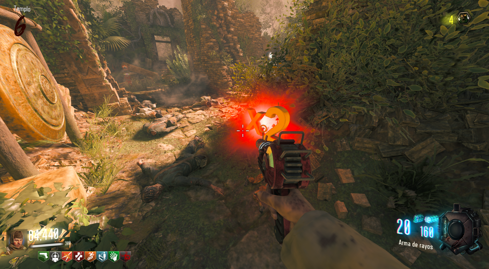

Tendremos que esperar a que aparezca un max ammo en el mapa.

Hecho esto, esperaremos a que un mono lo vaya a buscar.

Mientras el mono corre, el power up irá cambiando. Le dispararemos cuando tenga el perk y lo obtenemos.
